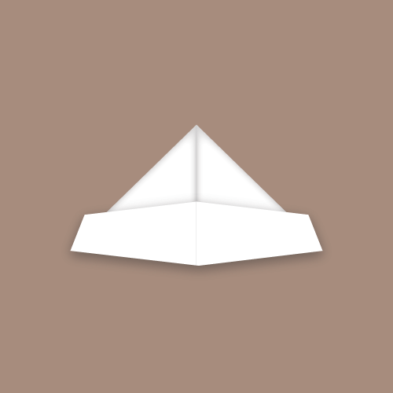

• 1 piece of paper (preferably 8.5 inches x 11 inches or of rectangular variety)
• Flat Surface
1. Fold paper in half crosswise
2. Fold paper in half crosswise again
• This will create a crease that will act
as a guide
3. Unfold paper
4. Fold top right corner of the paper toward the center crease
5. Repeat on other side; Fold the top left corner
of the paper toward the center crease
6. Fold the front bottom flap upwards
7. Repeat on the other side; flip over and
fold the front bottom flap upwards
8. Expand bottom portion and place on head
1. With bottom portion expanded, continue to expand until the sides come together
• This should create a diamond shape when you
turn it on its side
2. Tuck in folds on to one another
3. Repeat on other side; flip over and tuck in folds on to one another
4. Fold bottom center corner upwards until it reaches the top center corner
5. Repeat on other side; fold bottom center corner upwards until it reaches the top center corner
6. Expand open bottom until sides come together to create another diamond
7. Fold up to top corner
8. Repeat on other side; flip over and fold up to top corner
9. Pull out two center edges outward
10. Expand bottom portion and place on water
1. Untuck one flap inside of the boat and flatten
2. Fold right triangular portion into the center
3. Repeat on the other side; fold left triangular portion into the center
4. Fold top flap down
5. Repeat steps 1-4 on other side
6. Gently pull outward to expose folded triangle
7. Carefully untuck the triangle
8. Carefully straighten by using your hands
to guide the sides of the tray
9. Flatten bottom of the tray and straighten
any wrinkles
10. Place items into tray
You have now learned to make a paper hat, paper boat, and/or paper tray! Congratulations.
Since I am not very good at coming up with stories, let alone telling them, I decided to go with making an info-graphic. The first thing I could think of (that was not food related) was paper folding. I want to say that I made my first paper hat between the ages of seven and eight. Then at age nine, when I went to the Philippines, my cousin taught me how to go further into the same set of instructions of how to make the paper hat and transform it into a paper boat and then a paper tray. So, since this idea had three separate outcomes, but still had one set of instructions, I thought it would be a perfect topic for an info-graphic.
• If you were able to fold a piece of paper in half 103 times, it would be as thick as the Universe (Source).
• Although, the record for most folds of a piece of paper in half is only 12 times (Source).
• The official name for the art of paper folding is Origami (Source)
• The most paper cranes made in an hour totaled to 19,688 by approximately 2,000 people of Nanyang Primary School in Singapore (Source).
• The largest folded paper boat is over 45 feet long, over 13 feet wide, and over 13 feet tall (Source, Source)